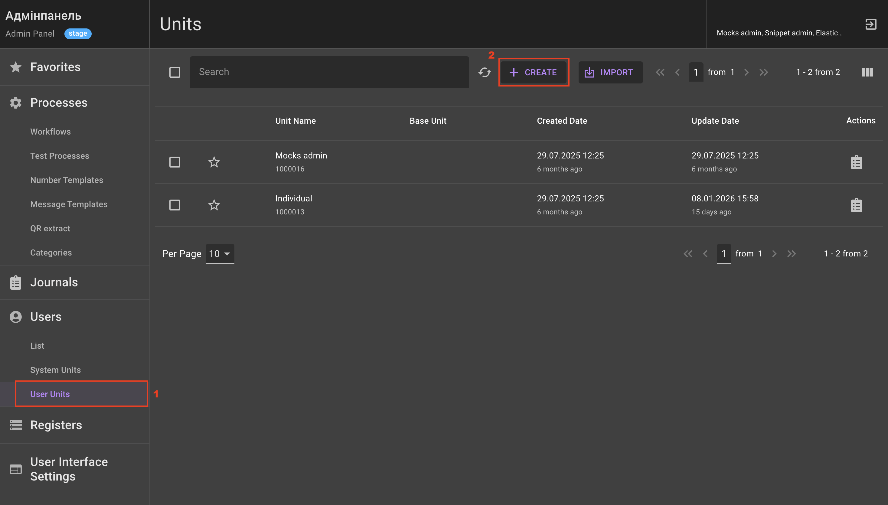
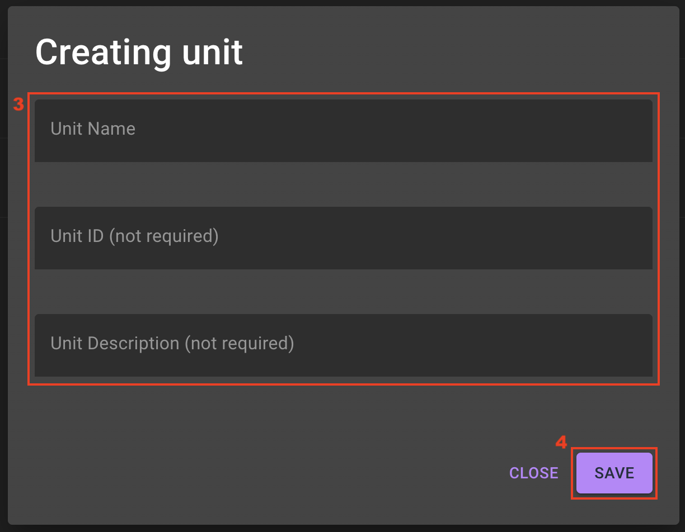
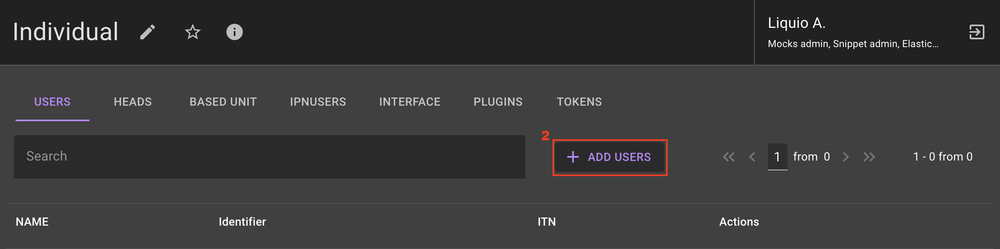
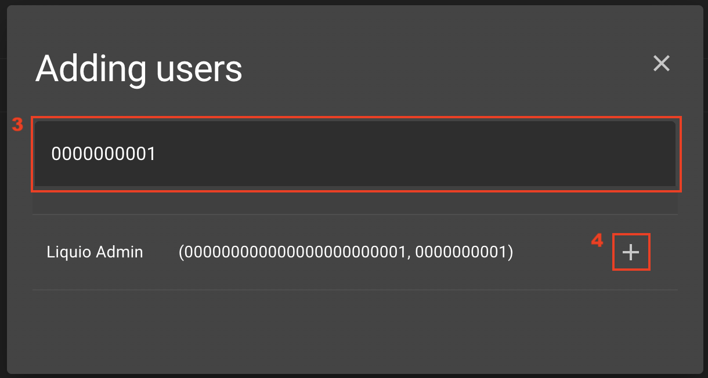
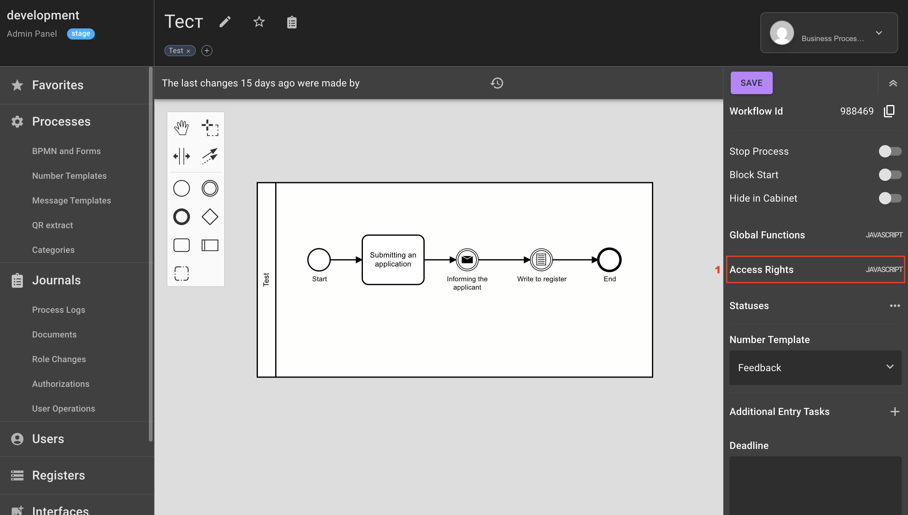
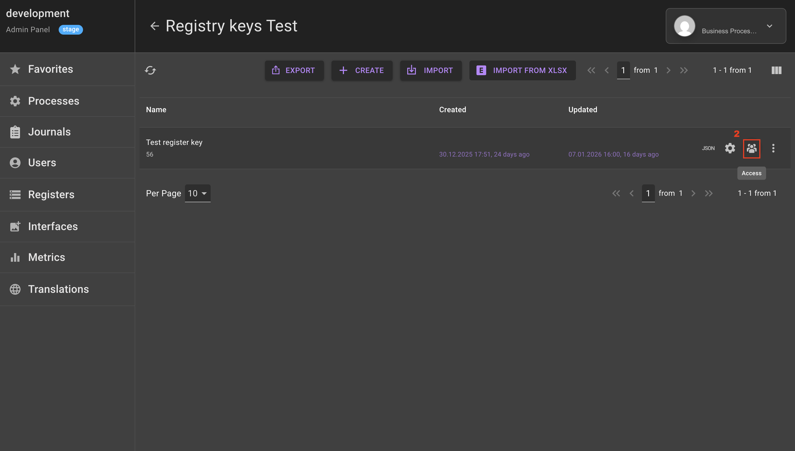
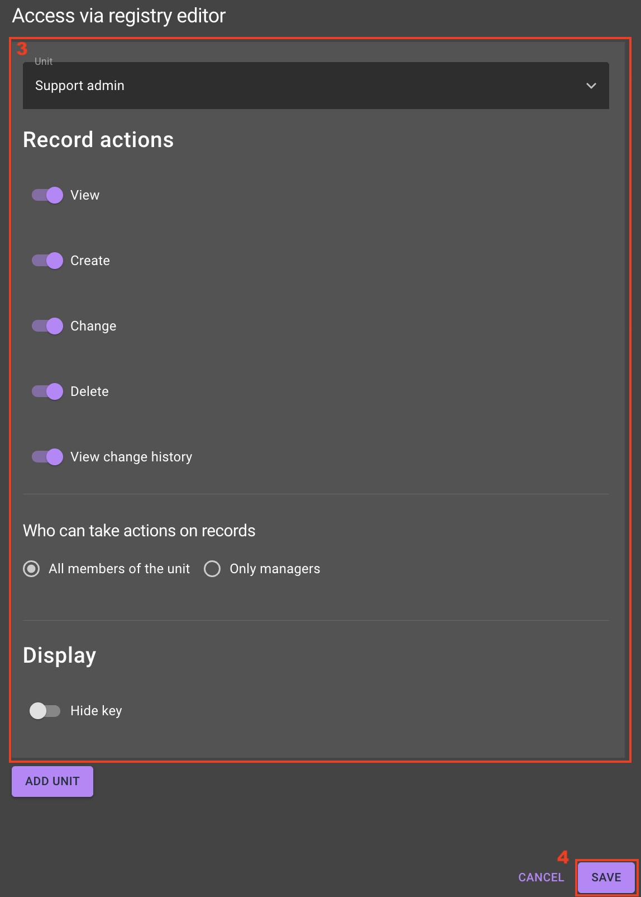
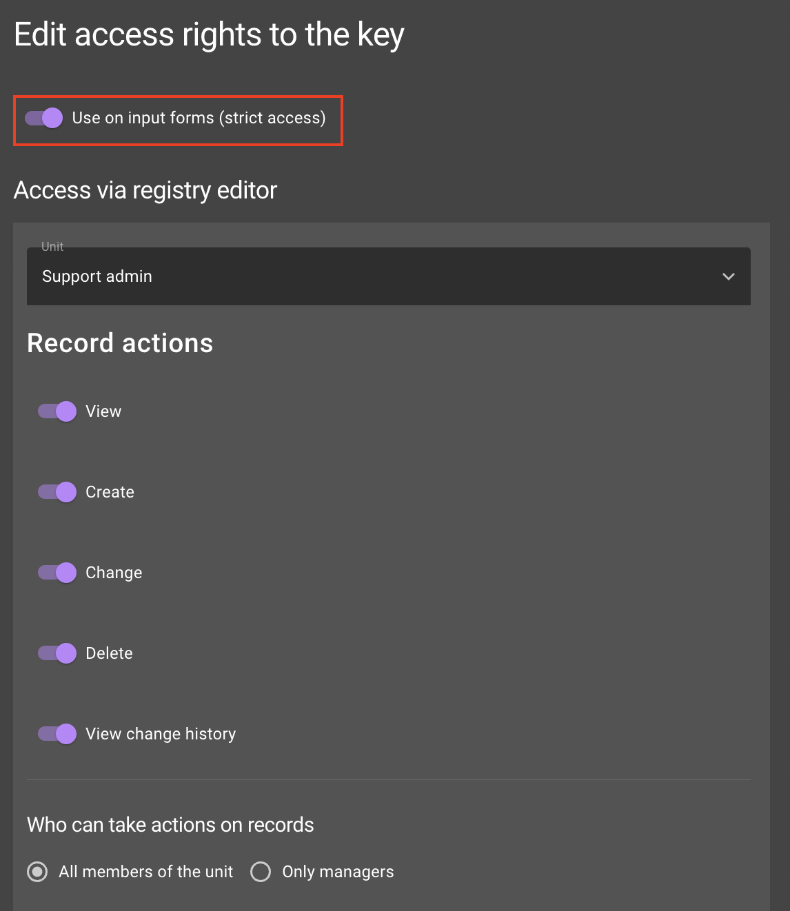

How to configure access rights?
Managing units and users
Prerequisites
User access rights are generally configured at the unit level to which the user belongs.
Unit — is a group of users with defined access rights. A user can belong to a unit or be its manager. Before configuring access rights, you need to create a user unit and add the required user to it.
Creating a unit
Steps:
1) Go to Users > User units.
2) Click the Create button. 
3) In the pop-up window Creating unit fill in the fields:
-
Unit Name;
-
Unit ID (not required);
-
Unit Description (not required).
4) Click the Save button. 
Adding a user to a unit
Steps:
1) Select one of the available units.
2) Click the Add users button. 
3) Search for a user by Full name, ITN or ID.
4) Click the Add button next to the user. 
Access rights to tasks
Access rights to a process task determine which users will see this task when going through the process in the User Workspace.
To configure access rights:
1) In the process editor, go to the Access Rights tab.

2) Configure a JavaScript function that defines access rights.
By default, a function is created that defines one task, available to all users, from which the process will start:
It is also possible to calculate different initial tasks for different units and grant access to the process only for specified units:
A variant of the calculation function where the initial task is 3121001, but provided that the current user is the manager of unit 2:
Access rights to registries
To configure access at the key level:
1) On the Registries tab, select the required registry. This will navigate to the registry key settings.
2) For the required registry key, click the Access icon.

3) In the pop-up window under the Access via registry editor heading, perform the following settings:
-
Select the required unit.
-
Activate the toggles next to the actions that the user will be able to perform with the record:
-
View;
-
Create;
-
Change;
-
Delete;
-
View change history;
-
Hide key;
-
-
Select who can perform actions with records:
-
All members of the unit;
-
Only managers.
-
Tip
If necessary, access can be described for several different units. To do this, click the Add unit button.
4) Click the Save button.

To enable the ability to use the registry key in the User Workspace on input forms as a data source, set the Use on input forms (strict access) toggle. This setting is independent of the user unit.
Tip
The registry key settings Use on input forms (strict access) and Contains personal data are incompatible, meaning they cannot be activated simultaneously.
